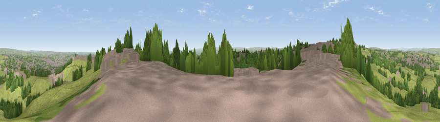

Viewpoint near Queensbury
#11684 in England · top 12% of its area beats it · near QueensburyThe view, rendered

A 360° render of this exact spot computed from the terrain model, tree cover and land cover — summer colours, afternoon light, calibrated against photographs of famous viewpoints. Real trees, hedges and buildings will differ in detail.
The panorama
Grey silhouette: terrain skyline in each direction (720 bearings, Earth curvature and refraction included). Dashed green: skyline with trees (+15 m) and buildings (+8 m) as obstacles. Blue strip: how far the ground is visible on each bearing.
Where the view opens
Wedge length = distance to the farthest visible ground on that bearing (vegetation-aware). Rings at 10, 25 and 50 km.
What fills the view
57% grassland · 23% built-up · 20% woodland ·
Angular shares of the visible panorama (visual magnitude), not map area. Landscape diversity 0.44 (0–1 Shannon).
Key numbers
More beautiful places nearby
The staircase of upgrades: each row has a higher view potential than everything closer. Driving times are estimates from straight-line distance, calibrated against real road routing — check an actual route before setting out.
| Place | Direction | Drive | Score |
|---|---|---|---|
| Viewpoint near Queensbury | ENE · 1 km | ~3 min | 66.8 |
| Viewpoint near Thornton | WNW · 3 km | ~8 min | 68.6 |
| Viewpoint near Stump Cross | SW · 3 km | ~8 min | 71.5 |
| Rawdon Billing | NE · 14 km | ~26 min | 73.0 |
| Viewpoint near Otley | NE · 17 km | ~29 min | 77.5 |
| Darwen Hill | WSW · 44 km | ~64 min | 80.7 |
| White Brow | WSW · 48 km | ~69 min | 82.9 |
| Warton Crag | NW · 75 km | ~98 min | 83.2 |
53.76961, -1.83725 · source: screening · position refined by local search. Computed location — check access rights before visiting.